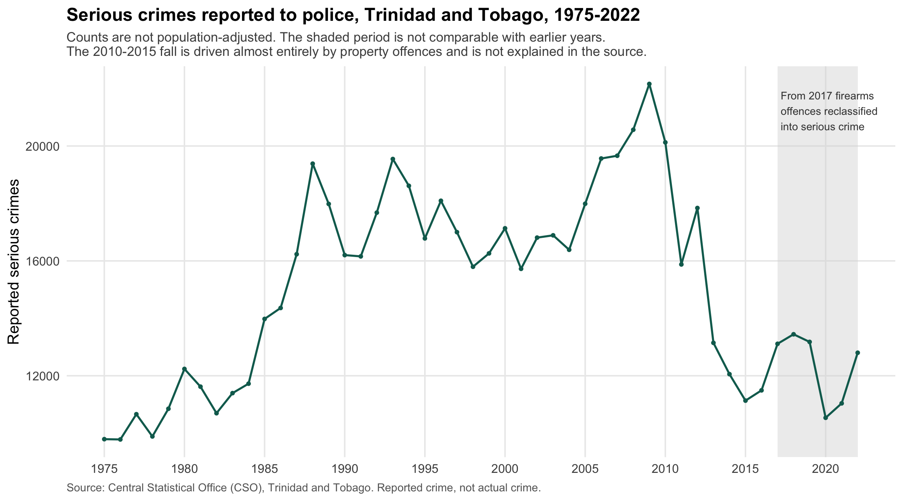
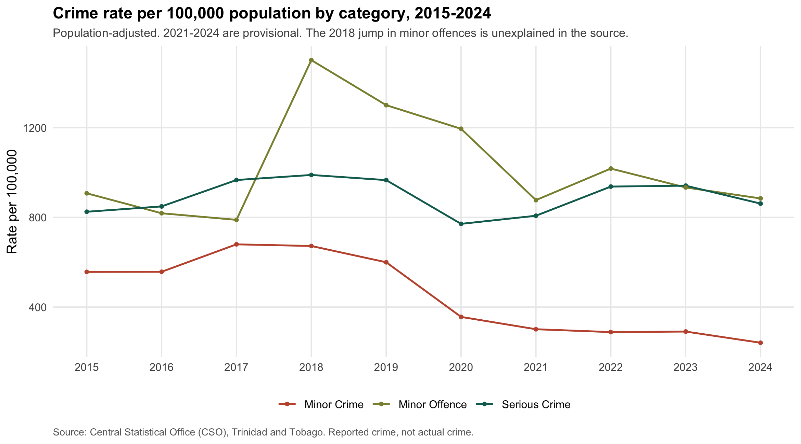
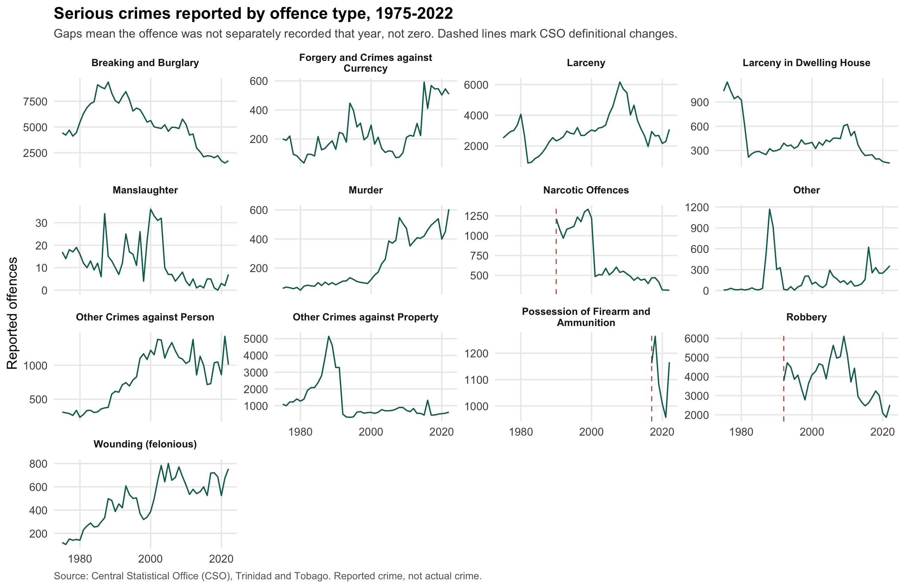
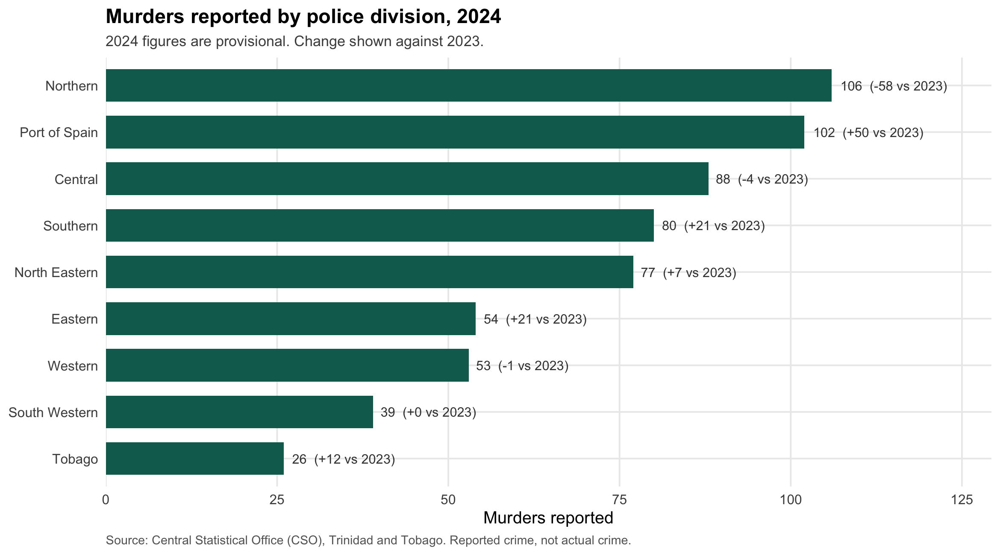
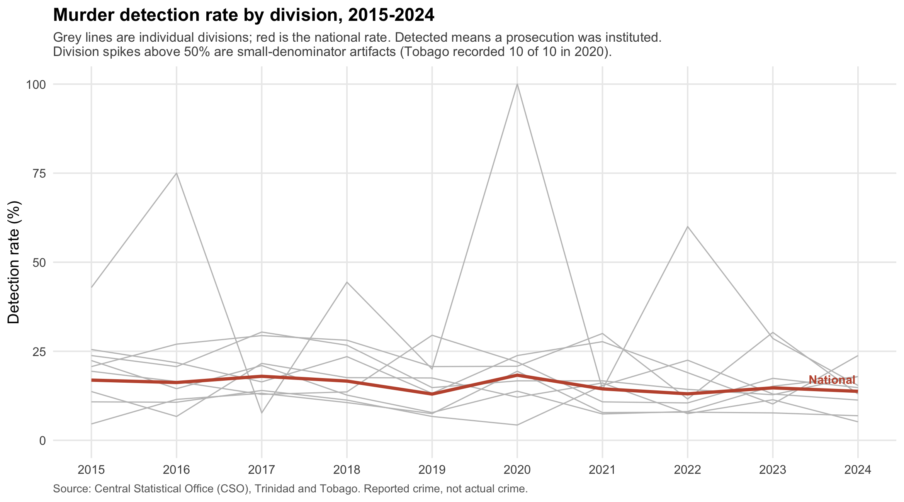

What fifty years of official crime statistics show, and what they cannot tell you.
This is a reproducible pipeline that takes the Central Statistical Office’s published crime spreadsheets, loads them into a normalised SQLite database, and analyses them in R. Every number on this page traces back to an official file, and the whole thing rebuilds from the raw downloads with one command.
It is the companion to AlerTT, a crime-awareness app I built for Trinidad and Tobago. AlerTT distinguishes verified reports from community reports. This is the verified layer: official statistics only, no scraping, no estimates.
The most useful thing in this data is not the crime counts. It is the gap between crimes reported and crimes solved.

Serious crime rose through the 1980s, peaked around 2009, and then fell by roughly half by 2015. That fall is the most striking feature of the chart, and it is almost certainly not what it looks like. See what this data cannot tell you below before drawing anything from it.
Counts alone conflate crime with population growth. The rate per 100,000 is the honest comparison, and the CSO publishes it only from 2015.


The divergence here is the real story. Murder rises steadily across the whole fifty years, from 60 in 1975 to 605 in 2022. Property offences (breaking and burglary, larceny, robbery) rise until about 2010 and then collapse.
Gaps in a panel mean the offence was not separately recorded that year. They are not zeros. Dashed lines mark years where the CSO states a category changed definition.

Northern and Port of Spain report the most murders in 2024. But the year-over-year swings are large relative to the counts: Port of Spain rose by 50 and Northern fell by 58 between 2023 and 2024. Single-year divisional rankings in this data are noisy, and one year’s leader is not a stable fact about a place.
This is the only divisional breakdown the CSO publishes. There is no by-division data for crime generally, so nothing here supports a claim about which division has the most crime overall.

This is the clearest finding in the data. The national murder detection rate has sat between 13% and 18% for a decade with no trend, and it was 13.8% in 2024. Roughly one murder in seven results in a prosecution.
The mechanism is visible in the raw numbers: detected murders have stayed near 70 to 90 per year while reported murders rose by half. The denominator grew and the numerator did not.
| Year | Reported | Detected | Rate |
|---|---|---|---|
| 2015 | 420 | 71 | 16.9% |
| 2016 | 462 | 75 | 16.2% |
| 2017 | 495 | 89 | 18.0% |
| 2018 | 517 | 86 | 16.6% |
| 2019 | 539 | 70 | 13.0% |
| 2020 | 399 | 73 | 18.3% |
| 2021 | 450 | 65 | 14.4% |
| 2022 | 605 | 79 | 13.1% |
| 2023 | 577 | 85 | 14.7% |
| 2024 | 625 | 86 | 13.8% |
This section is longer than the findings on purpose. Most of the interesting-looking patterns in official crime data are artifacts, and the useful skill is telling which is which.
The post-2010 fall is not evidence that crime halved. Serious crime dropped from 22,161 (2009) to 11,135 (2015). But the fall is almost entirely property offences: breaking and burglary down 60%, larceny down 51%, robbery down 52%, while murder fell only 11% and felonious wounding only 3%. Murder and wounding are the hardest offences to under-report. A genuine halving of crime that leaves homicide essentially untouched is not credible. The year-to-year path is also implausible: -21.1%, then +12.4%, then -26.3%. This reads as a change in recording or reporting practice, and the CSO documentation does not explain it. It needs confirmation from CSO before anyone interprets it.
Most of the 2017 rise is an accounting change. Serious crime rose 1,620 offences from 2016 to 2017. Firearms possession offences moved from the Minor Crime category into Serious Crime that year and account for 1,162 of that rise, about 72%. The category held 942 offences under Minor Crime in 2016 and appears with 1,162 under Serious Crime in 2017. The same offences, counted in a different column.
Beyond those two:
Four spreadsheets from the CSO, none of them designed to be read by a machine: title rows, multi-row headers, merged year cells, two tables stacked inside one sheet, footnote blocks, spaces used as thousands separators, and a formula error that reported exactly double the correct total in one block.
The pipeline is four steps:
R/01_clean.R). Parse each sheet by explicit row and column position, verified against the actual files. Non-numeric markers are handled by meaning, not by pattern: - means the offence was not separately defined that year and becomes NULL, not zero. Treating it as zero would claim robbery was zero in 1975, which the source never says.R/02_build_db.R). A star schema in SQLite: four fact tables at four different grains, sharing conformed dimensions for year, offence, crime category and division. One fact per source publication, because merging publications with different vintages would assert rows no source supports.R/03_validate.R). Seven checks, all passing. The important one: murder counts are compared across three independent CSO publications and agree exactly for every overlapping year. Serious-crime offence columns reconcile to the published totals across all 48 years.R/04_views.R, R/05_plots.R). Aggregation lives in SQL views, including year-over-year via window functions, so a chart cannot quietly redefine what a measure means. The charts are ggplot2.Dependencies are locked with renv, so the project rebuilds on another machine at the same package versions. The database itself is not committed: it is a build artifact, and the pipeline is the source of truth.
Two schema decisions were forced by the data rather than chosen up front. Provisional status had to move off the year dimension onto the fact tables, because different publications mark different years provisional, so it is a property of the published row and not of the calendar year. And offences had to be keyed on name plus crime class, because “Other”, “Narcotic Offences” and “Total” each appear under more than one class.
Data: Central Statistical Office (CSO), Trinidad and Tobago, retrieved 23/07/2026 from https://cso.gov.tt. Underlying collection by the Crime and Problem Analysis Branch of the Trinidad and Tobago Police Service.
Used under the CSO Terms of Use, which permit republication and adaptation with attribution and prohibit commercial use. This is a non-commercial portfolio project. The CSO terms are not a standard open-data licence, and describing them as “open” would be inaccurate.